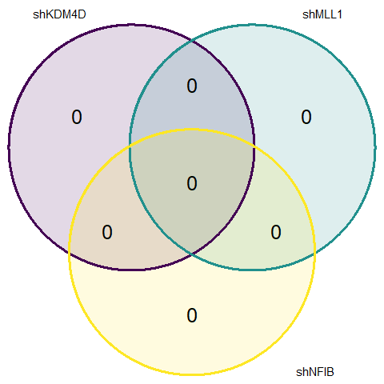
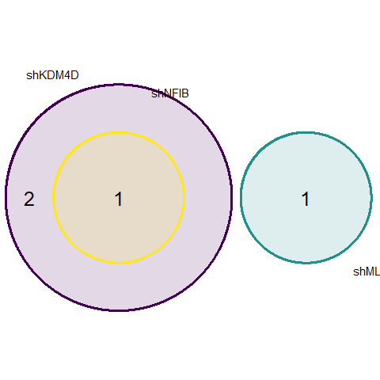
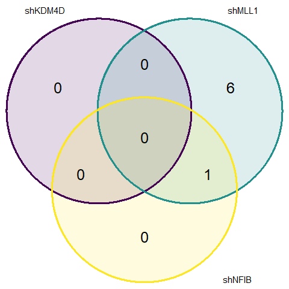
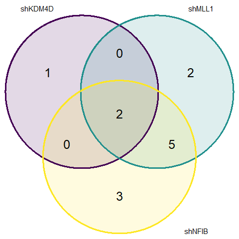

In order to run DESEQ2 for our purposes, I had to treat R1 and R2 as replicates for each sample.
Criteria for DGE: 2-fold change in gene expression compared to control and p.adj < 0.05
| Upregulated Genes | Downregulated Genes |
|  |  |
| Upregulated Genes | Downregulated Genes |
|  |  |